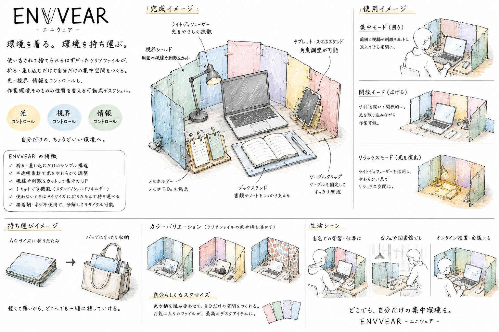

!DOCTYPE html>
クリアファイル再生プロジェクト
[クリアファイル再生プロジェクト]
『アイデアスケッチ』

自分は、不器用で機械音痴である。認めたくはない。現時点でもこのサイトを作るのにものすごく時間がかかっている。本当はさらっとかっこよく3DCADを使って作品を作りたい。
しかし、いまだに苦手意識がある。そんな中、なんとなく「クリアファイルそのまま」に手を挙げた。不器用は不器用なりにそのまま素材を活かして何かを作りたい。
クリアファイルがこうなったのか!?という感動を届けられるような作品が作れるのだろうか。